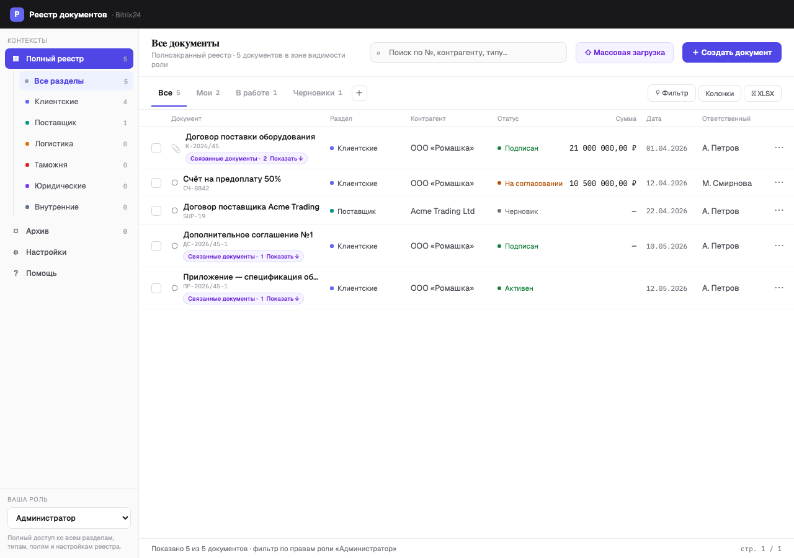
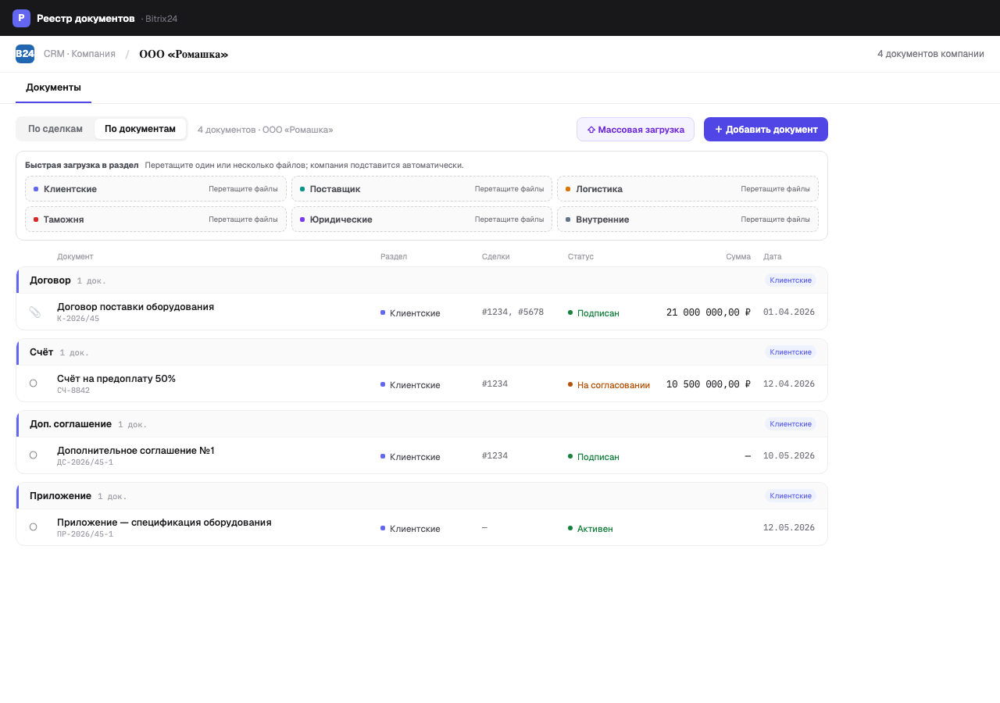
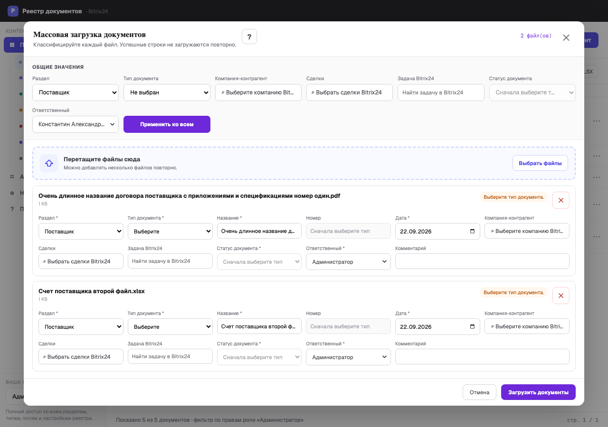

Реестр документов
Краткая инструкция пользователя: поиск, создание и массовая загрузка документов, работа из сделки и компании, связи, версии и архив.
Где открыть
Откройте приложение в левом меню Bitrix24 либо вкладку «Реестр документов» в карточке сделки или компании.
Что вы видите
Состав документов, поля, суммы и доступные действия зависят от вашей роли и прав на сделки и компании в CRM.

Поиск, фильтры и колонки
- Введите номер, название, контрагента или тип в строке поиска.
- Откройте «Фильтр», чтобы ограничить разделы, статусы, тип, ответственного, компанию, даты и пользовательские поля.
- В меню «Колонки» выберите стандартные и пользовательские поля. Одноимённые поля помечены типом документа.
- Сохраните набор как личное представление. Общие представления создаёт пользователь с соответствующими правами.
- XLSX содержит текущие колонки и отфильтрованные документы; скрытые ролью поля и суммы в файл не попадают.
Числа в матрице компании «Раздел × Статус» работают как фильтры. Активный фильтр показан над списком, там же его можно сбросить.

Массовая загрузка
- Нажмите «Массовая загрузка» и перетащите файлы в область загрузки.
- Задайте общие раздел, тип, компанию, сделки, ответственного и статус либо заполните строки отдельно.
- Для каждой строки можно исправить название, номер, дату, сумму, пользовательские поля и связи.
- Ошибочная строка остаётся в списке с пояснением; исправьте её и повторите загрузку.
Сделки выбираются только после компании и только из доступных сделок этой компании. Сервер повторно проверяет соответствие при сохранении.
